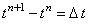
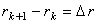
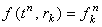
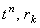

3. Примеры численного решения интегро-дифференциальных уравнений.
|
3.1. Решение уравнений математической модели процесса массовой кристаллизации.
Рассмотрим методику численного решения интегро-дифференциальных уравнений из математической модели процесса массовой кристаллизации. Уравнение, описывающее баланс по концентрации кристаллизующегося компонента имеет вид:
Уравнение (14.5) содержит одну производную, описывающую изменение концентрации кристаллизующегося компонента с во времени. Причём, функция с является функцией только одной независимой переменной (времени). В правой части уравнения (14.5) находится интеграл, содержащий функцию распределения включений по размерам f, значения которой зависят как от времени, так и от размера включений. То есть, функция f является функцией двух независимых переменных - t и r. Также в подынтегральное выражение входит функция скорости роста кристалла  ,
зависящая от размера кристалла и от величины пересыщения раствора (т.е., разности текущей и равновесной
концентраций раствора), а, следовательно, являющаяся функцией двух независимых переменных - t и r. ,
зависящая от размера кристалла и от величины пересыщения раствора (т.е., разности текущей и равновесной
концентраций раствора), а, следовательно, являющаяся функцией двух независимых переменных - t и r.
Таким образом, для записи разностной схемы, аппроксимирующей уравнение (14.5), требуется ввести двумерную разностную сетку (по осям которой отложены независимые переменные - время t и размер кристаллов r), а также следующие обозначения: n = 0, 1, 2, ..., M - порядковый номер точки деления по оси t; k = 1, 2, 3, ..., Nr - порядковый номер точки деления по оси r;  - величина интервала между точками по оси t;  - величина интервала между точками по оси r;  - значение функции f, соответствующее точкам . Для аппроксимации производной по времени будем использовать, как и обычно, правую конечную разность:
требуется использование
принципа замороженных коэффициентов (иначе разностная схема не будет разрешима). Учитывая всё сказанное,
запишем разностную схему для аппроксимации уравнения (14.5):
Аналогично записывается разностная схема для уравнения, описывающего тепловой баланс:
Разностная схема (14.7) решается с помощью рекуррентного соотношения:
|